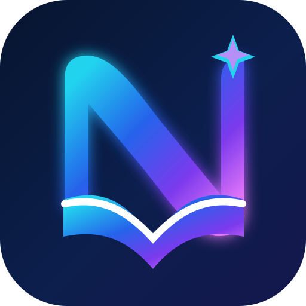

NorieLearningLearn with Norie, even offline.
Download NorieLearning for your Windows PC or Android phone. Core lessons and local learning progress work without an account or internet connection after installation. Optional online services require connectivity and configuration.
Checking the latest published release…
Windows PC
Portable package for 64-bit Windows 10 or later.
The ZIP will appear here when verified release details are available.
Install and open
- Download the ZIP and choose Extract all.
- Keep the extracted folder and its files together.
- Open NorieLearning.exe from that folder. No installer or administrator access is required for normal use.
This Windows package is unsigned. Windows may show an unknown-publisher warning. Verify the release and checksum before deciding whether to run it; do not disable your device's security protections.
Android phone
APK for Android 7.0 (API 24) or later.
The APK will appear here when verified release details are available.
Install and open
- Download the APK on your Android device.
- Open the download. If Android requests it, allow installation from the browser or file manager you used.
- Install NorieLearning and open it. You can turn that installation permission off afterward.
Preview signing: this APK uses Flutter's generated debug key, not a production release key. Updates may need an uninstall if the key changes. Uninstalling can erase local progress. Keep important progress backed up before replacing an existing installation.
Check your download
Each package shows its SHA-256 checksum and exact source revision. On Windows, run Get-FileHash .\NorieLearning-Windows.zip -Algorithm SHA256 in PowerShell and compare the result. Release notes include both package checksums in SHA256SUMS.txt.
All public releases, release notes, and checksums · Open the web preview